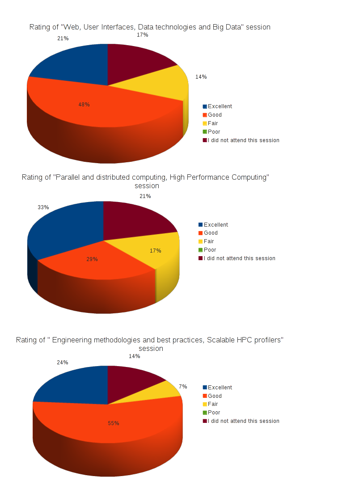

Below are the statistics from 42 respondents and the response to comment and suggestions

Comments meriting a response
- BOFs?
- Disucssion sessions on some topics
- Maybe more time to network and talk with other participants.
- More opportunities for extended discussions and ad hoc groups
- Consider adding a reception / poster session.
Thanks for the suggestions. As some of the comments without response below mention, there were the communal lunches as an opportunity to talk and network. However, the SEA will consider adding BOF or a poster session for next year.
- Have more than one female speaker
- It surprised that we ended out with only a single female presenter, and she presented on project management, not software engineering. I would love to see female software engineers represented among the speakers.
As you probably know, software engineering is a male dominated field. There has been only one talk submitted by a female speaker, it has been accepted by the conference committee and it is the one you are referring to. SEA has solicited talks from many possible female presenters, implemented an anti-harassment policy and provided travel support to the speakers who needed it. If you have any suggestions on how to foster a more diverse speaker community, we'd love to hear from you!
- Some of the talks seemed removed from what scientists actually use in their work. More on practicalities of getting large data sets, processing large datasets would be useful.
- With the emphasis on high performance computing, which makes complete sense for the NCAR community, many of the talks were not relevant to my work. If anything, I would like to see Big Data solutions around non-MPI solutions like Hadoop and the various NoSQL databases. But I understand that this may not be relevant for most NCAR HPC-ers. My main interest is to see that scientific programmers learn to adopt modern software engineering practices, concepts, and tools.
- I might suggest having a shorter conference with tracks, rather than a single conference with one track. Not all talks will be interesting to everyone, and this may be a more efficient use of time and space.
- I thought that the scope of the talks was too broad. There was little or no continuity from one talk to the next.
- Please cover more breadth of software development next year. There was too much focus on supercomputing this year. Lots of cool stuff got no attention at all. Qt? Eclipse? SCons? etc...
- The talks were very uneven, with some very good talks interspersed with some fairly bad talks.
The SEA in general and this conference in particular tries to be useful to a broad range of engineers, and it is therefore expected that some topics are not interesting to everybody (note that some comments seem to contradict each other, and with some of the comments reported in the section below, which was in fact expected).
However, the SEA do appreciate the feedback and will take it into account for the future. But the best way to influence the topics and the talks that will be accepted next year is to join us! The SEA is a do-cracy and the conference committee will welcome your contribution in defining a session or reviewing the proposed talks!
- Allow a "no-food" price option for attendees because there are people with food allergies that could not eat many of the food options. It would nice to have this cheaper options for others, too.
- We needed more fruit, decaf coffee and no cakes.
- I would have liked more fruit, healthier snacks rather than the preponderance of sweets.
Thanks for the suggestions. There was already some fruit every day, but the SEA will try to have more (and maybe place it in more evidence) next year. Regarding the "no-food" registration option, we understand the request, but it requires more logistic efforts and resources than the SEA can dedicate. Moreover, the conference's registration price was already so low that the "no-food" option would not have made it much cheaper (try to compare the registration fee of similar events)
- The non-native english speakers (including the host) were very difficult to understand. A better microphone/sound system would be a good start for improvement.
I'm sorry you had trouble understanding the non native speakers, including myself. I am sure the problem was not in the microphone system but in the speaker. Hopefully being able to download the slides and watch the video online will help clarifying things.
In my partial defense as session chair, I was not ready to be the host since I substituted the English speaker chairman who did not show up. Next year the SEA will try to engage more native speakers as session chairs (volunteers welcome!)
Comments not requiring a response
- On whole, I was quite pleased with the conference -- it was worth my time. I was impressed that there was such a range of people from outside NCAR and Boulder presenting.
- Everything else was great.
- Excellent work! This was a first-class conference!
- I thought Jennifer Williamson did an absolutely fantastic jobs arranging this conference. She made this the smoothest such event I have attended. Way to go!
- It was well organized, had good attendance, and the facilities were really nice. I do appreciate having this local conference and would like to participate again next year. Thanks for organizing and hosting this event.
- Overall, this is a wonderful conference, especially for the price! Exactly the kind of thing government agencies should be doing to foster collaboration and education.
- My tutorial was great. The tutorials are so much more useful than talks. I wish I could have gone to two :)
- Interesting topics and interested users, a good program all around.
- Keep the good work and continue inspiring and helping young students to attend this conferences and know people that in the future could help them to become a better proffesional in the industry.
- Great experience and really grateful for the opportunity. Everything was organized and the topics covered were really interesting.
- The seminar room had a good layout and it was easy to see the slides from anywhere in the room. The break area was good for sitting and talking, and the lunches were nice. A couple of the talks weren't as interesting to me but for the most part the talk selection was good. The performance tutorials were the best, however. Having the tool developers there to ask questions of, and being able to show them your own code and get help was invaluable.
- Pretty good job already. Having the communal lunches were productive.
- The web casts were extremely useful. It allowed me to take breaks and deal with work that couldn't wait. Otherwise I'd just have had to skip those sessions.
- Great job!
- The tutorial sessions were excellent in part because they were poorly attended and so those of us who participated got excellent one-on-one interaction with the presenters.

{kind=link}
{kind=link}
{kind=link}